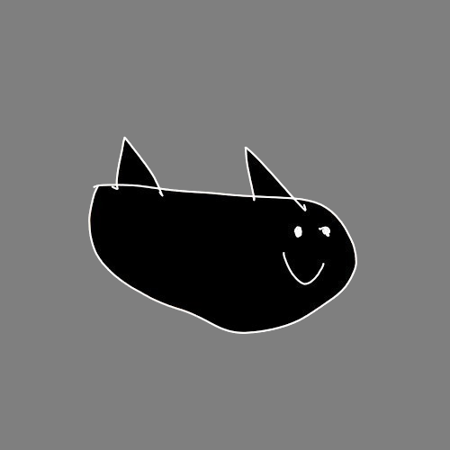

not dead yet, site partially made by Claude AI

the mascot. Shark Boat.
I live somewhere with terrible instant coffee and genuinely good cheese. GMT+2. That should narrow it down enough. the coffee is awful but at least it is cockroach-free unlike some places i could mention
I am colorblind. I work with 8 colors. The palette you see on this page? deliberate. I tested it. If it looks weird to you that is a you problem.
My keyboard layout is Colemak. I got bored of QWERTY. That is the whole reason.
Sharks have been around for roughly 450 million years. They predate trees. They predate the rings of Saturn. Most of them do not want to eat you -- you are simply an inconvenient shape in their water.
They are not scary. They are correctly proportioned for what they do. I will not apologize for thinking that.
Most sharks are not aggressive. They are curious. You are a weird shape in their water and they want to know what you are. That is it. The vast majority of so-called unprovoked attacks trace back to something that provoked them first. a foot in the wrong place, splashing that reads as distress, somebody grabbing one. They bit. Shocking to absolutely nobody who was paying attention.
Mid-range. Does the job. Here is what is in it:
Nothing exotic. It runs what I need it to run.
If you want to reach me, figure out the timezone math first. I am GMT+2 -- 2 hours ahead of UTC, so take your UTC offset and add 2. If that math puts you messaging me at an unreasonable hour, wait.
Everything else, projects, work, whatever, lives somewhere on this site. Look around. Shark Boat approves of curiosity.